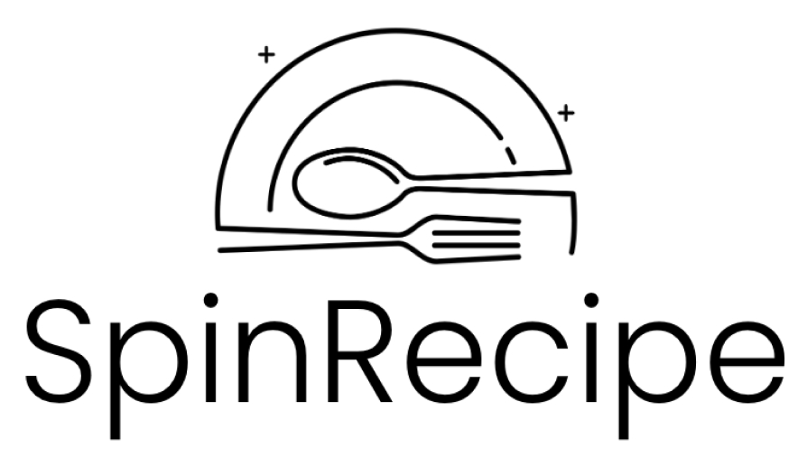

Penne
Arrabbiata Prep: 10 min
Cook: 30 min
Arrabbiata Prep: 10 min
Cook: 30 min
Ingredients
Instructions
- 1. Cook pasta in a large pot of boiling water, according to package instructions, until tender.
- 2. Heat olive oil in a large skillet over medium heat. Add garlic and crushed red pepper; cook, stirring for 30 seconds.
- 3. Add tomatoes, crushing them roughly with the back of a wooden spoon, and tomato paste. Simmer for 5-10 minutes.
- 4. When pasta is cooked, drain the water and add it to the sauce. Toss well.
- 5. Serve immediately topped with grated pecorino or parmesan cheese and fresh parsley.